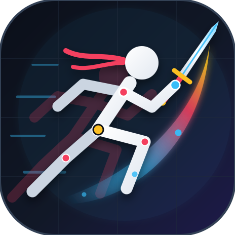

RigStick

RigStick
File
Edit
View
Joint
Animation
Window
Help
Animate
Draw
Build
Export
Cancel
Test rig
Done
Done
Done
Scene
960 × 540
Finish
0 joints
Finish
Joints
Paths
Grid
Effects
Handles
Highlight
Reduced preview
100%
Select
Current frame
Return to animation →
Scene 01
— fps
Drop a RigStick, Pivot or Stick Nodes file here
Timeline
Simple
Advanced
00:00:00
fps
Edit selected frames
CREATE
Add to your scene
Stick figure
Start with a character
Text
Add a title or caption
Image
Place an image
Import figure
Open a figure or movie clip
Movieclip
A reusable animated group that plays inside your scene
Empty movieclip
From selection
From frame range
Project library
Example animations